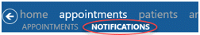
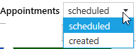
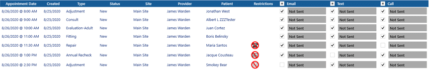
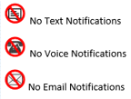
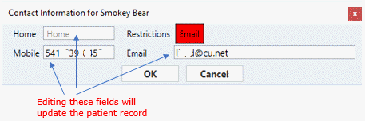
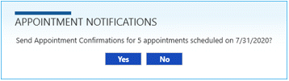
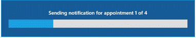
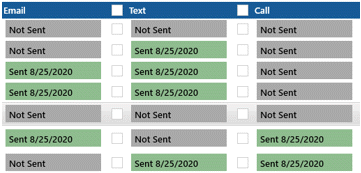
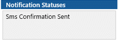

Sending Notifications
 Note: On replicated databases, make sure replication is up to date before sending Notifications.
Note: On replicated databases, make sure replication is up to date before sending Notifications.
The Notifications link is active when a User is assigned permission to send Appointment Notifications.

Click on the Notification Center link to open the Notifications window.

- Select the Send Notifications link.
- Select Appointment Confirmation or Appointment Verification from the Message Type drop down list.

- Select All or a specific Site.
- Select All or a specific Appointment Type.
- Check the Use Date Range box to enter a range of dates, or select one date only.
- Choose whether to include Appointments Scheduled or Created on the selected date(s).

- Click the Build List button to generate a list of patient names according to the selected criteria.


- For each patient/appointment, the box underneath each notification type will be checked or unchecked based on various criteria.
- If a patient has a Communication Restriction that specifies No Calls, No Text, or No E-mail Notifications, then the check box after the patient name in the appropriate column will not be checked. A corresponding icon will be displayed in the Restrictions column.

- If the patient is missing a phone number or email address, the corresponding notification type will be unchecked.
- Each type of notification must be enabled in the Provider setup to allow the checkbox next to that type of notification to be checked.
- Double-click on the patient name to view the Contact Information for the patient and make any changes if needed. Editing the phone or email address here will update the patient record.

- Un-check the names of any patients/notification types to be excluded from the current list.
- Click on the Send Notifications button.

- A confirmation message will popup indicating how many notifications will be sent. Click Yes to proceed, or No to cancel.

- A Sending Appointment Notifications window will show the progress of sending the Notifications.

- A message will popup when sending is complete.
- As each Notification is sent a Green or Red bar will appear under each notification type column. (see example)

- A Green bar indicates the transmission was successful for the notification types checked below each column for Email, Text and Call.
- A Red bar indicates the transmission was not successful and the notification types will not be checked below each column for Email, Text and Call.
- If no Notification was sent, the bar will remain Gray and display "Not Sent".
- In the Appointment Summary panel, the specific notifications sent will appear in the Notification Statuses section.
